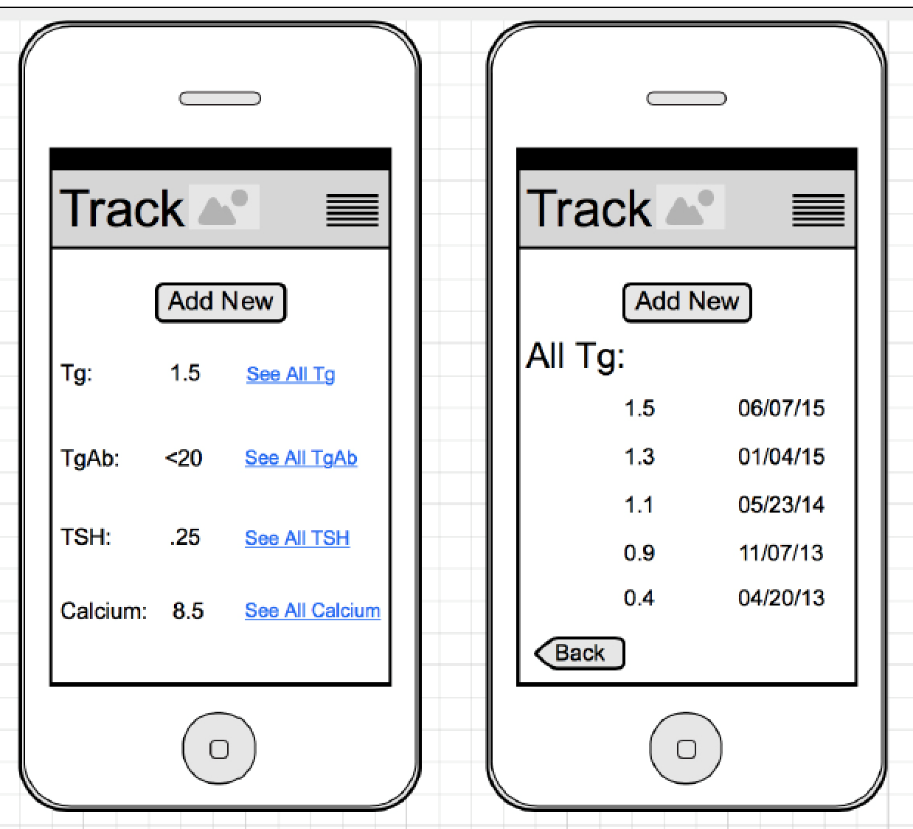

UI/UX Designer
 Back to Home
Back to HomeThyroid Cancer Patient App Design UI/UX Case Study
The product:
A prototype of a smartphone app for thyroid cancer patients to help them connect with others and monitor their thyroid-specific medical results. Additionally, an online shop with related branding was created to support funding for one of the primary thryoid cancer charities.
Project duration:
March 2015 – June 2015
The problem:
There were no apps intended for thyroid cancer patients. There are apps for those with the more common hypothyroidism and general cancer apps, much of which does not apply to those with thyroid cancer. Thyroid cancer, being a less common cancer than others, tends to get neglected as far as patient information, common understanding, and resources to help patients in all stages of their treatment. There are many possible lifelong complications related to thyroid cancer, and having access to patient resources for years after their diagnosis, can help them feel more connected, less isolated, and better informed.
The goal:
To design a secure way for patients to navigate various unique health needs of the long-term thyroid cancer patient
Responsibilities:
User research, brand research, information architecture, and wireframing
Remote interviews and screening through online forums were conducted to learn about user needs and pain points.
Key User Insights:
- Volunteers are in various stages of diagnosis and treatment
- All 3 interviewees have smartphones and would use their smartphone to access support for their disease. Two of the three already access online support group(s) through their smartphones
- Some interviewees have trouble consistently remembering to take daily medications/supplements and timing them correctly. 2 out of 3 would use a tracker for taking their pills.
- 2 out of the 3 do not understand some of the terminology for thyroid cancer
The most difficult aspects of dealing with thyroid cancer are:
- Feeling isolated or alone
- Lack of consistent standards from doctors
- Not knowing what the treatment is going to be like
- Family and friends not understanding what they're going through
Aspects of dealing with thyroid cancer users most wish to improve:
- Going through isolation for Radioiodine Treatment
- High costs of treatment
- Dealing with insurance hassles
The MyThy Connect Smartphone App can improve some of the difficulties these patients face by providing a one-stop shop for online resources, communities, and assistance with tracking of pills, prescriptions, appointments, and labwork measurements.
Personas
Based on study of users, personas were developed that captured key aspects, characteristics, needs, and pain points for different categories of users.
User Stories
Based upon the personas, user stories were written to describe the personas' wants and needs.
Branding and Lexicon
The personality of the brand was determined and a visual lexicon was established, which defined the look and feel, such as color, fonts, and iconography. Also, the tone and voice of the app were determined, specifying the mood and type of language to be used in text instructions, reminders, and field descriptions. All of these aspects were thought about, to present an appropriate and cohesive product.
Card Sorting
For Information Architecture, a card sorting exercise was performed to determine how to organize various functions and screens of the app.
Site Map
A site map was developed based on the previous exercise and additional feedback received. The user stories were considered to help determine the most intuitive information architecture for patients.
Paper Wireframes
As I sketched design ideas for the screens, I thought about each step the user takes when accessing thryoid care support.

Digital wireframes
User feedback and pain points informed design decisions in order to increase usability. Based upon paper wireframes, I created digital mockups for the mobile screens for a typical user flow.

Accessibility considerations
1. Clear terminology is used and options offered for users to learn more information about medical terminology
2. Meaningful iconography and color-coding are used to aid understanding
3. Common design patterns are used, for example, as with calendar bookings
5. Link to privacy policy is available
Takeaways
Impact:
The prototype was well received by user testers and stakeholders because this app would solve many of their issues. Patients expressed that this app would let them be in control of their own healthcare and help them from feeling so isolated.
What I learned:
I learned that by listening to patients' needs, technology can be used to help mitigate their feelings of isolation and their unique challenges.
Back to Home
To Top of Page
Contact
Email: jenlycke@gmail.com
Phone: (757) 477-1244


Just For Fun